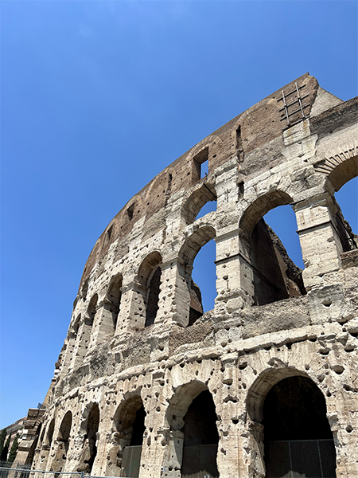
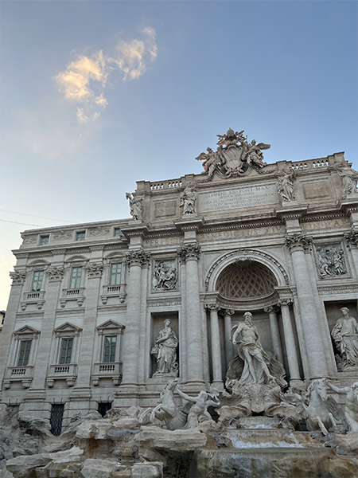

Rome
Rome is the capital city of Italy. It was a beautiful city with a rich history and amazing architecture. We were not prepared for the extremely high temperatures. The food was by far my favorite part of the trip. Pizza and pasta for days. Luckily the large amount of walking made up for our diet.



Highlights
- Colosseum
- When you think of Rome of course you think of the Colosseum. We had the opportunity to tour the inside and get a different point of view. A large amphitheatre that would house 65,000 Roman spectators in acient Rome. An amazing piece of history.
- Trevi Fountain of Rome
- The most famous foutain in quite possible the world. It is a monument that depicts Neptune the god of the sea on his chariot. You can't leave without tosing a coin in the fountain!
- Pantheon
- The Pantheon is a former Roman temple that has been transformed into a Catholic church. It is amazing to see how much of the building has been perserved.
- St. Peter's Basilica
- Located in the Vatican City and built in the 1506. It is also the resting place and many notable individuals and popes. You can also find famous artwork and sculptures inside the chapels.ca
- Castel Sant'Angelo
- The castle was originally the tomb of Roman Emperor Hadrian and his family. It was later used as fortress that would house the Pope in time of turmoil. It as an amazing piece of architecture.